História
Formada em 1984 na Califórnia por Dexter Holland, Greg K. e Noodles, o The Offspring tornou-se pilar do punk rock nos anos 1990. O divisor de águas veio em 1994 com o álbum Smash; lançado de forma independente, o disco vendeu mais de 11 milhões de cópias impulsionado por clássicos como "Come Out and Play" e "Self Esteem", projetando a cena californiana globalmente.
O sucesso se consolidou em 1998 com o álbum Americana, dono de hits como "Pretty Fly (For a White Guy)" e "The Kids Aren't Alright". Com quatro décadas de carreira e mais de 40 milhões de discos vendidos, a banda mantém sua relevância nos palcos, destacando-se também pelo vocalista Dexter Holland, que é doutor em Biologia Molecular.
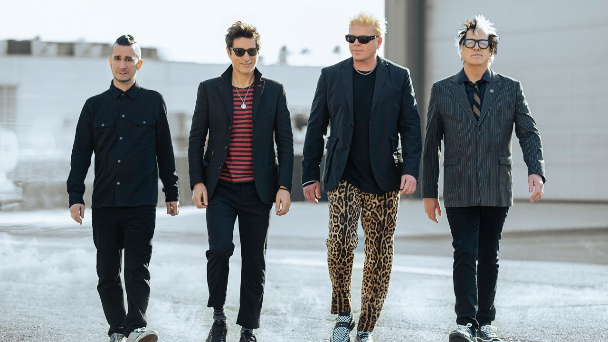
Integrantes

Dexter Holland
Vocalista e Guitarrista
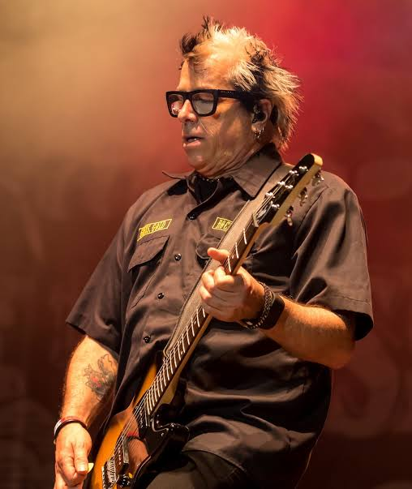
Noodles
Guitarrista
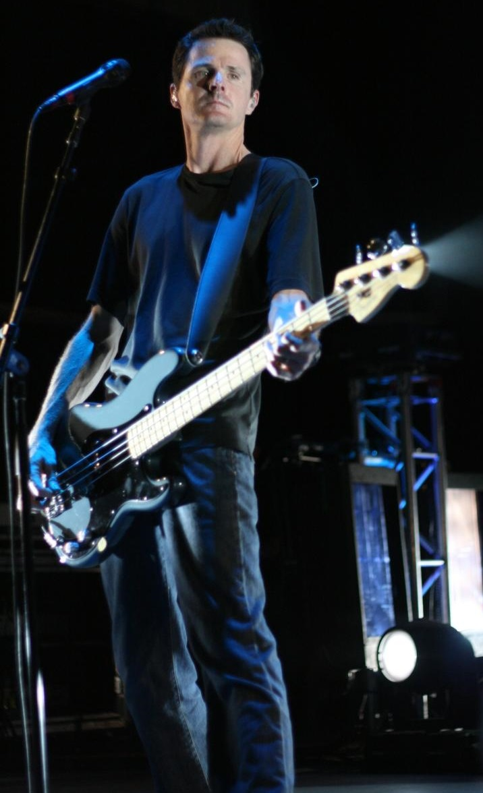
Greg K.
Baixista
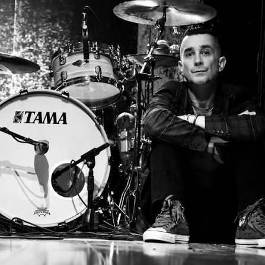
Pete Parada
Baterista
Discografia
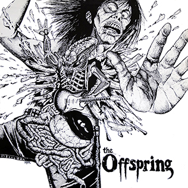
The Offspring
1989
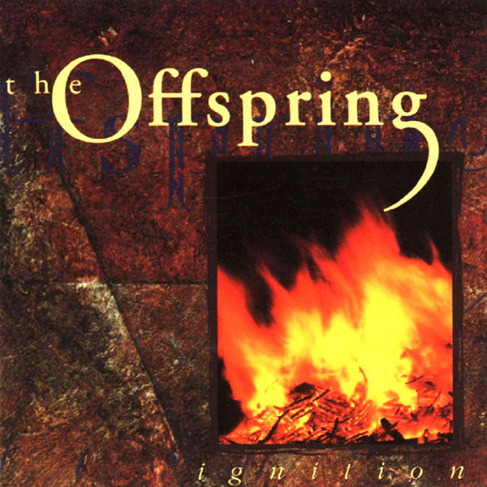
Ignition
1992
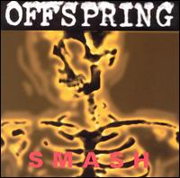
Smash
1994
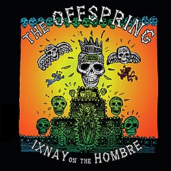
Ixnay on the Hombre
1997
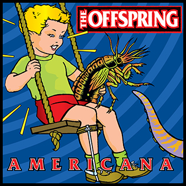
Americana
1998
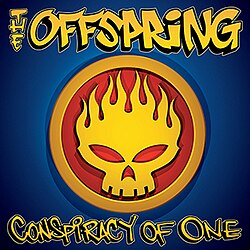
Conspiracy of One
2000
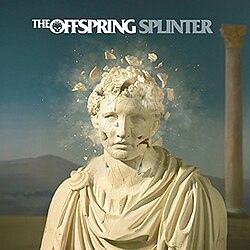
Splinter
2003
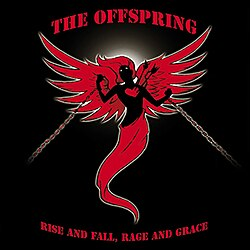
Rise and Fall, Rage and Grace
2008
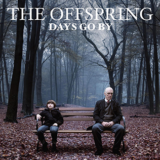
Days Go By
2012
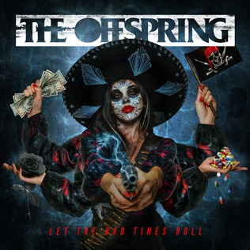
Let The Bad Times Roll
2021
Galeria
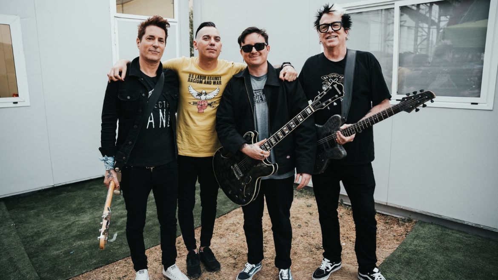
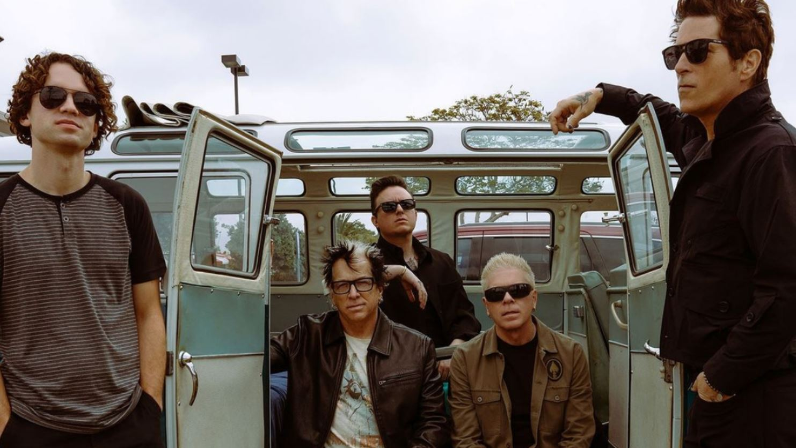
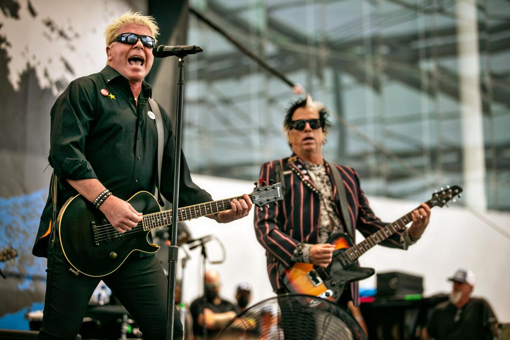
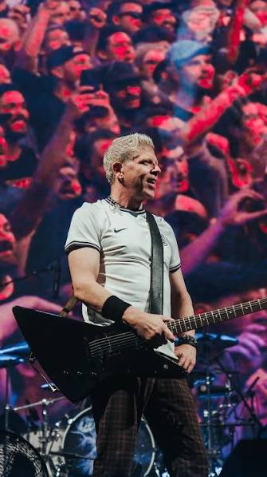
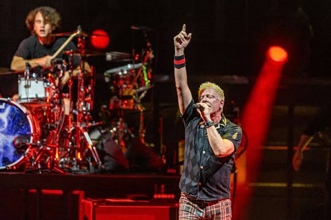
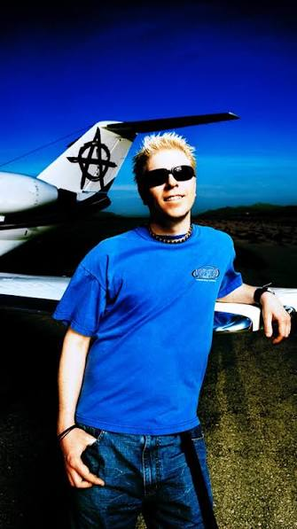
Curiosidades
Dexter Holland é doutor em Biologia Molecular pela Universidade do Sul da Califórnia.
O álbum Smash vendeu mais de 11 milhões de cópias sendo lançado por uma gravadora independente — recorde histórico.
Em mais de 40 anos de carreira, o grupo jamais desacelerou. Mesmo passando por reestruturações em sua formação, a banda segue na estrada de forma ininterrupta.